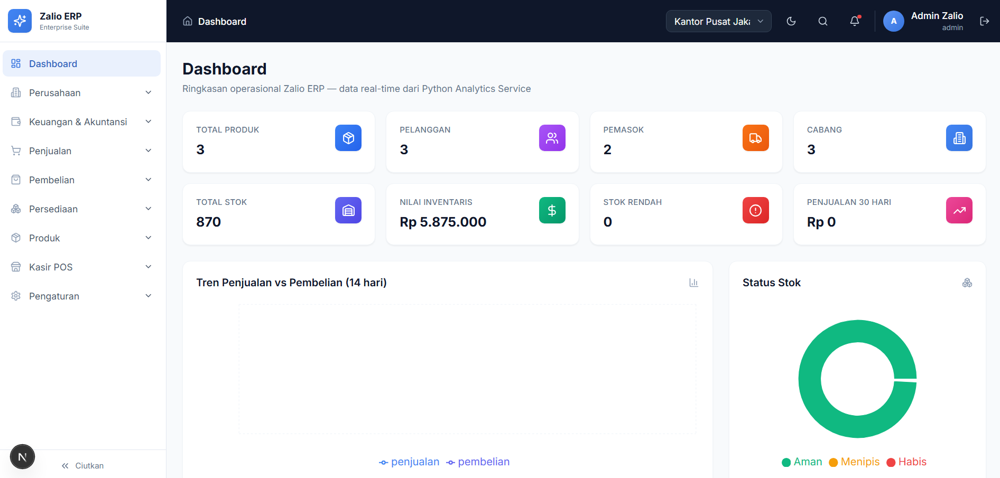

Fullstack Developer & System Analyst
Halo, saya Abyan Farisi Syahrial.
Membangun solusi digital yang efisien dari hulu ke hilir, serta merancang arsitektur sistem yang andal dan mudah dikembangkan.

Profil
Tentang Saya
Saya adalah developer berusia 23 tahun yang memiliki passion besar dalam menerjemahkan masalah bisnis menjadi solusi kode yang bersih, terukur, dan mudah dipelihara.
Saya memiliki pola pikir analitis yang kuat, yang sering saya terapkan tidak hanya pada arsitektur perangkat lunak, tetapi juga saat melakukan riset komparasi dan membedah spesifikasi perangkat keras—seperti performa wireless dan keandalan sensor periferal komputer.

Toolkit
Keahlian Teknis
Frontend
HTML
CSS
Tailwind
JavaScript
Backend
PHP
Laravel
MySQL
System Analysis
UML
Database Design
UAT
API Integration
Selected work
Studi Kasus & Proyek

Sistem Inventaris Perumahan Terintegrasi
Merancang dan mengembangkan sistem manajemen inventaris perumahan. Bertanggung jawab atas arsitektur sistem, skenario User Acceptance Testing (UAT), hingga integrasi payment gateway Faspay untuk otomatisasi transaksi.
LaravelFaspay APITailwind CSSMySQL
Personal Project
